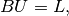

Constraint brick¶
The constraint brick allows to add an explicit constraint on a variable. Explicit
means that no integration is done. if  is a variable then a constraint of
the type
is a variable then a constraint of
the type

can be added with the two following functions:
indbrick = getfem::add_constraint_with_penalization(md, varname,
penalisation_coeff, B, L);
indbrick = getfem::add_constraint_with_multipliers(md, varname,
multname, B, L);
In the second case, a (fixed size) variable which will serve as a multiplier should be first added to the model.
For the penalized version B should not contain a plain row, otherwise the whole tangent matrix will be plain. The penalization parameter can be changed thanks to the function:
change_penalization_coeff(md, ind_brick, penalisation_coeff);
It is possible to change the constraints at any time thanks to the two following functions:
getfem::set_private_data_matrix(md, indbrick, B)
getfem::set_private_data_rhs(md, indbrick, L)
where indbrick is the index of the brick in the model.

前のトピックへ
Nitsche’s method for dirichlet and contact boundary conditions
次のトピックへ
Download
Main documentations
- GetFEM++ User documentation
- Python Interface
- Matlab Interface
- Scilab Interface
- Gmm++
- GetFEM++ project